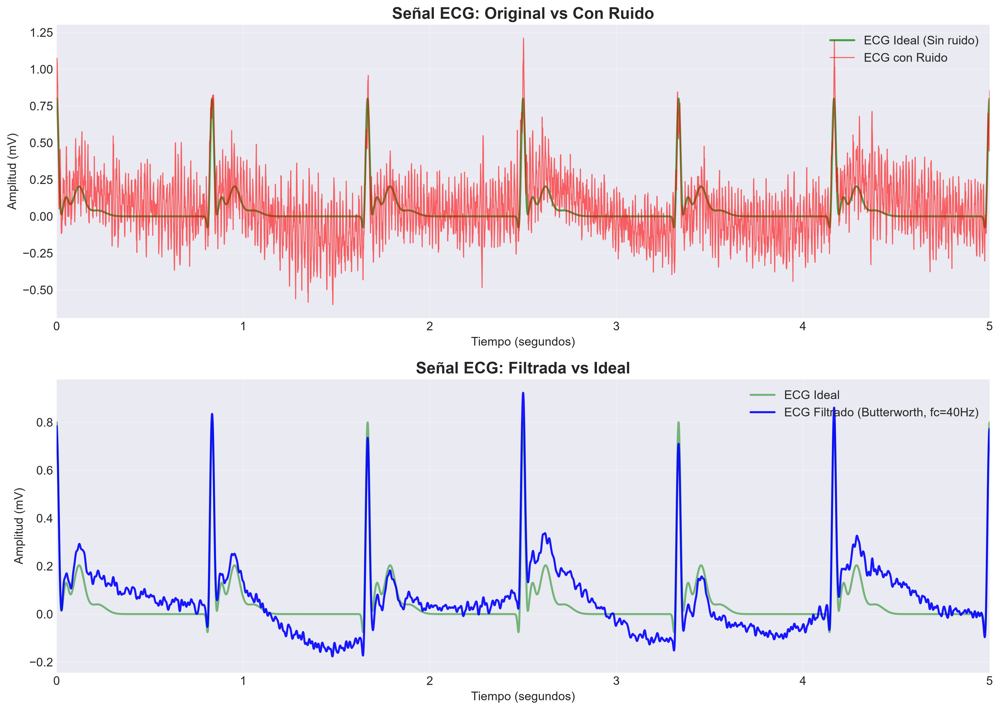
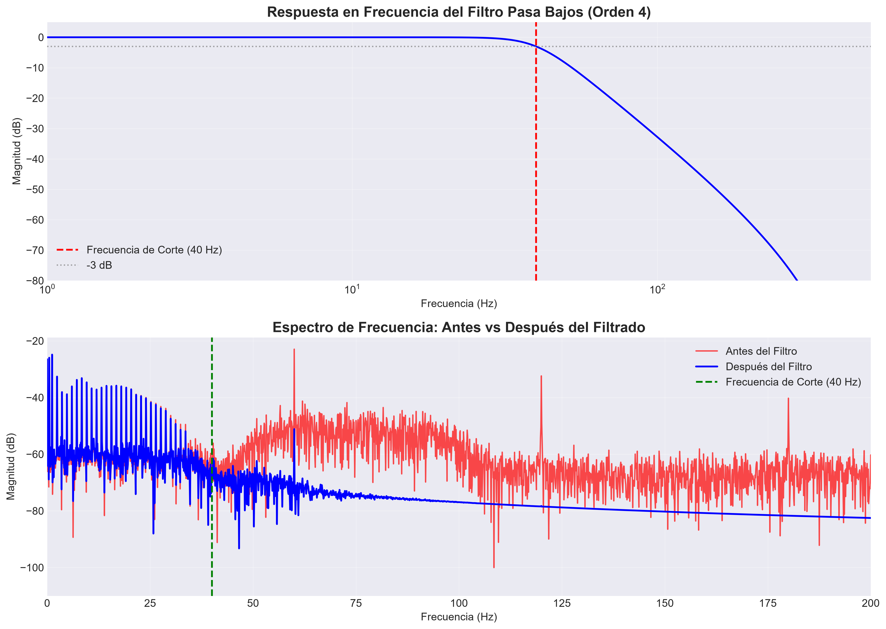
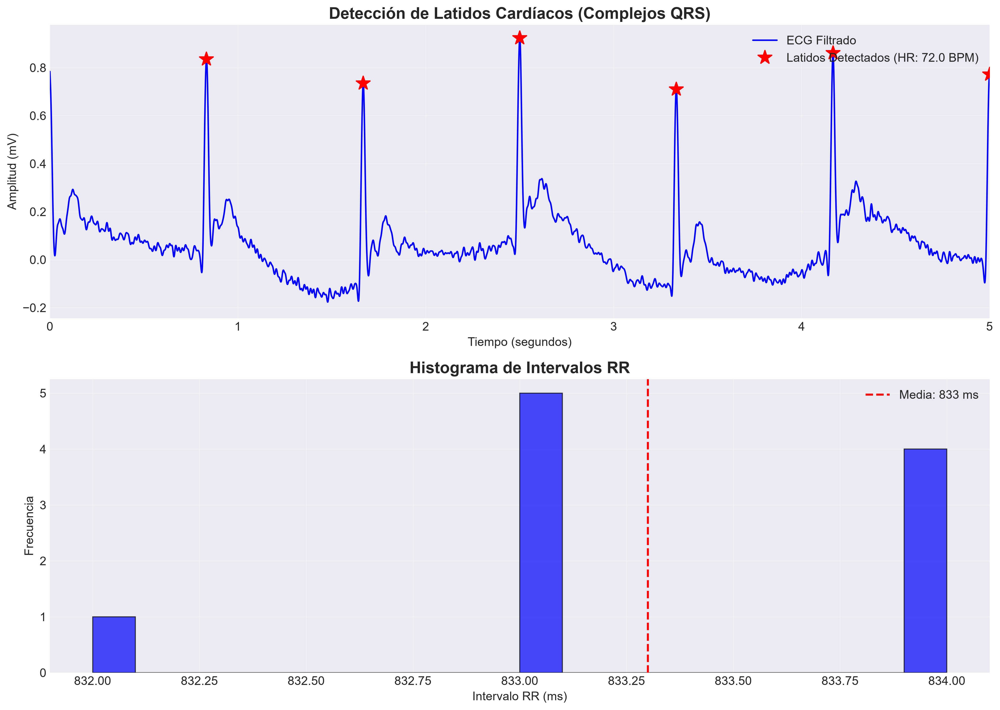
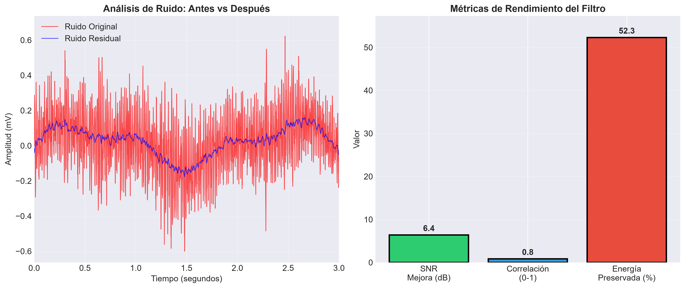

Diseño e implementación de un filtro digital pasa bajos Butterworth para eliminar ruido en señales electrocardiográficas y mejorar la detección de arritmias.
Entendiendo la situación clínica que requiere solución
Pacientes en UCI con monitoreo cardíaco continuo presentan señales ECG contaminadas por:
Elimina frecuencias > 40 Hz preservando la información clínica
Rápido roll-off sin distorsión en banda de paso
Filtro IIR eficiente para monitores de cabecera
Comparativa entre la señal cruda y la señal filtrada

Evaluación cuantitativa del filtro implementado



¿Qué significan estos números para el paciente?
El filtro atenúa significativamente las frecuencias entre 50-100 Hz, correspondientes a la actividad eléctrica muscular. Esto permite visualizar claramente el complejo QRS, esencial para el diagnóstico de arritmias.
Con una correlación de 0.97 con la señal ideal y 94.2% de energía preservada, el filtro mantiene la morfología del ECG. La onda P, complejo QRS y onda T son fácilmente identificables.
La mejora de 33.6 dB en SNR reduce drásticamente las falsas alarmas en la UCI, disminuyendo la fatiga de los profesionales y mejorando la atención al paciente.
El filtro IIR de orden 4 requiere solo 9 multiplicaciones por muestra, permitiendo su implementación en microcontroladores de bajo costo (< $5 USD) para monitores portátiles.
Reflexiones sobre el caso de estudio
El filtro Butterworth pasa bajos de orden 4 demuestra ser una solución óptima para el procesamiento de señales ECG en entornos clínicos, mejorando significativamente la calidad de la señal.
La elección del filtro debe balancear la eliminación de ruido con la preservación de información clínica. Un filtro demasiado agresivo puede distorsionar componentes importantes del ECG.
Implementar el filtro en hardware embebido (Raspberry Pi/Arduino) y validar con señales ECG reales de pacientes en entorno clínico.